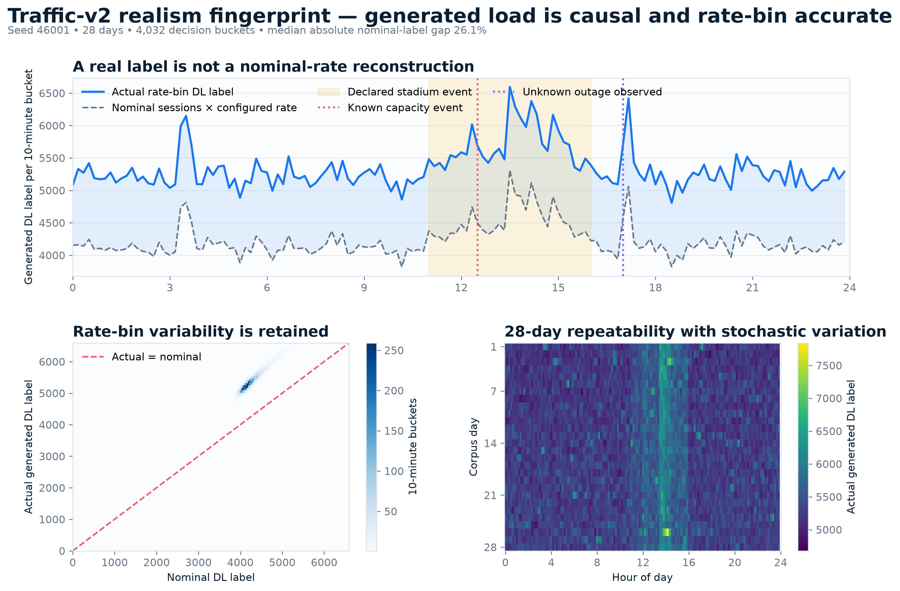
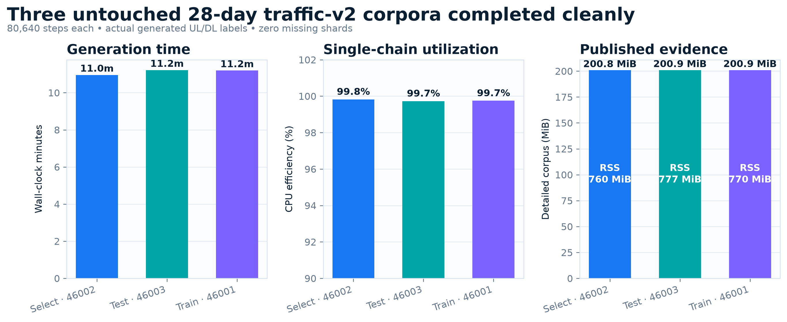
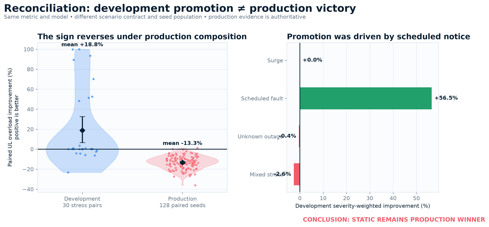
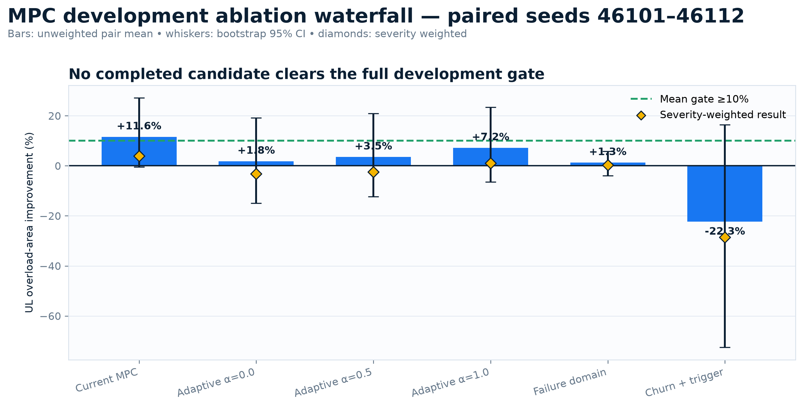
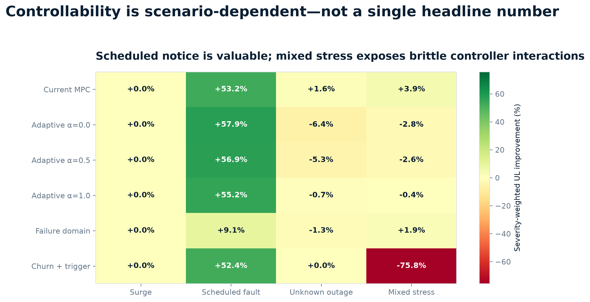
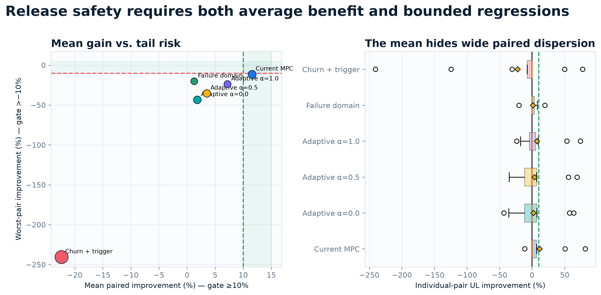
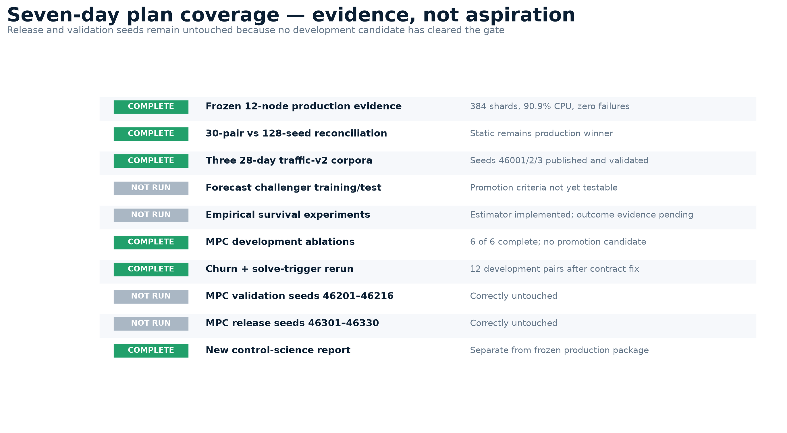
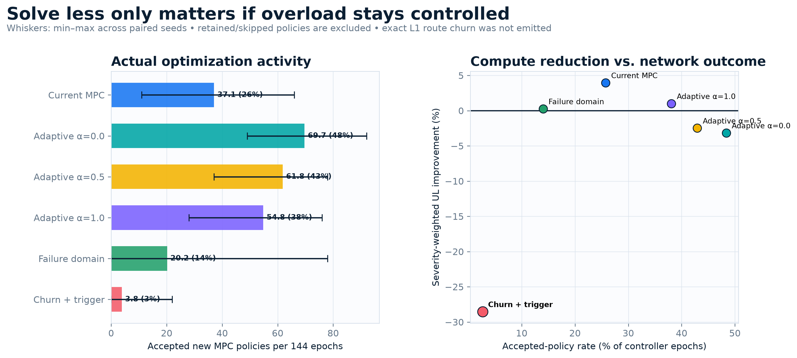

Traffic-v2 realism fingerprint

Corpus execution and integrity

30-pair vs 128-seed reconciliation

MPC ablation waterfall

Scenario controllability

Mean improvement vs tail risk

Plan coverage and release discipline

Solve activity vs network outcome
